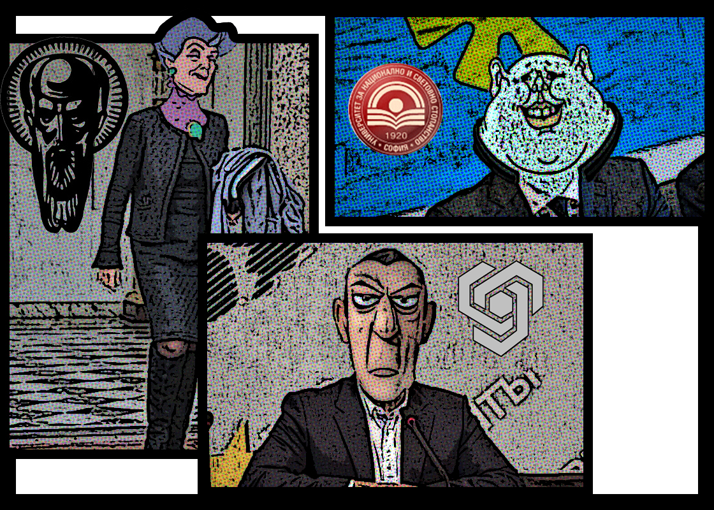
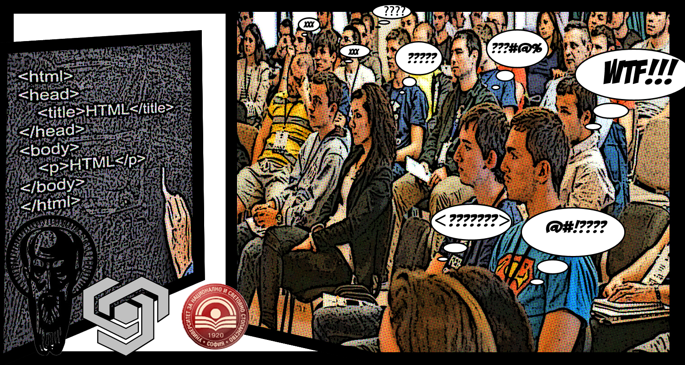
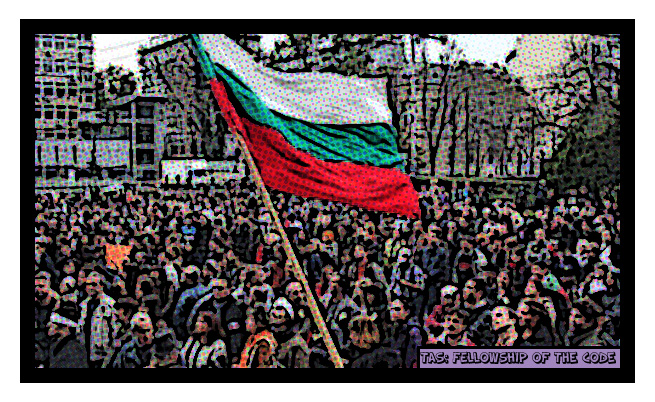
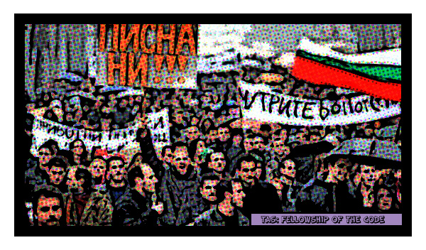
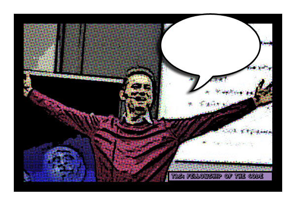

В тъмен и страшен замък , нейде из дълбините на Филиповци , нощта едва сега започвала ...
Зли , страшни и безкомпромисни ректори били на прага да пуснат в действие плана за масова поквара над умовете на подрастващите..
Било решено , че програмистите са заплаха номер едно за заплатите на злите ректори и противодействие било задължително
Компютърните специалности били закрити, останали само обучение за така необходимите "същества" front-end-ери , които да оправят безбожно грозните сайтове на университетите , чиите били под ръководството на злите ректори.
Младите амбициозни хора , обединени под името "Късноставащите студенти" се вдигнали на протести незабавно , търсейки решение на разрастващата се над тях тежка участ..
По време на "Четъвртият кръстоносен поход" в посока мрачното царство в Филиповци , ярък лъч светлина разцепил облаците и заслепил младежите.."
След първоначалното заслепяване , те вече виждали ясно , пред очите им бил техния спасител , изпратен може би от нечия небесна сила за да ги спаси ..
Той бил пред тях, той бил Светлин Наков и знаел точно какво следва!